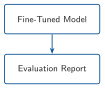
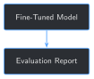

def build_held_out_eval_set() -> list[dict]:
examples, _artifacts_filtered = build_timeline_examples_for_report(FULL_SET_DIR / HELD_OUT_REPORT)
return examples
eval_set = build_held_out_eval_set()
print(f"{len(eval_set)} held-out examples, report never used in any training set")11 Evaluating a Fine-Tuned Domain Model


Progress ███████████░░ 11 / 13 · Estimated time: 30-40 min · Difficulty: 🟠 Intermediate
11.1 Learning objectives
By the end of this chapter, you will be able to:
- Build a real, held-out evaluation set from a report that has never been in any training set in this book — not two hand-picked questions, eight real ones
- Explain why a single metric can make fine-tuning look like it did nothing, and why a second metric can prove that’s wrong
- Compute perplexity — a metric that needs real held-out text, not a known-correct answer — and use it to measure something exact-match can’t see at all
- Read Chapter 8’s own
metrics.csvfor what it’s been quietly tracking every epoch, and turn one column of it into a real evaluation harness
11.2 Operational Problem
Mike, the completions engineer who asked back in Chapter 5 whether fine-tuning teaches the operation or just memorizes flashcards, has a sharper version of the same question now that Chapters 9 and 10 added retrieval and faithfulness-checking on top: “We’ve been checking all of this on a handful of questions I picked myself, because I already knew what I was looking for in each one. How do I know any of it holds up on a question I didn’t pick?”
Chapter 5 answered a narrower version of this with 0/16 and 0/2. Chapter 9 and 10 each checked exactly 4 hand-picked cases. None of that is a real evaluation — it’s a handful of examples someone happened to check by hand, exactly what Chapter 10 ended by admitting doesn’t scale. This chapter builds a real evaluation set — 8 real questions from a report that has never been in any training set in this book — and scores it more than one way, because a single number turns out not to be enough to answer Mike’s question honestly.
11.3 Example: one answer, asked eight different questions
Run Chapter 8’s fine-tuned model against all 8 real held-out questions this chapter builds — no retrieval, no grounding context, exactly the same setup Chapter 5’s original held-out check used — and something worth noticing happens before any scoring at all:
NoteEight different questions, from a report the model never trained on
Time: 06:00-18:30 (part 1 of 2) -> Production Casing Run Csg & Cement Rig up casing
Time: 18:30-20:30 -> Production Casing Run Csg & Cement Rig up cement
Time: 20:30-21:30 -> Production Casing Run Csg & Cement Rig up cement
Time: 21:30-00:30 -> Production Casing Run Csg & Cement Rig up casing
Time: 00:30-02:30 -> Production Casing Run Csg & Cement Rig up casing
Time: 02:30-03:30 -> Production Casing Run Csg & Cement Rig up cement
Time: 03:30-06:00 -> Production Casing Run Csg & Cement Rig up casingEight different time windows, seven near-identical answers. Whatever Chapter 8’s fine-tune actually learned, it isn’t “what happened at each of these specific times” — it’s something closer to a single memorized-sounding template the model reaches for regardless of the question. Scoring that against a known-correct answer is one useful number. It is not the only useful number.
11.4 Theory
TipEngineering Translation: evaluation set
An evaluation set is a fixed, reusable list of questions with known-correct answers, held back from training the same way Chapter 2’s held-out report always has been — the difference this chapter makes is size. Chapter 3’s held-out check used 2 questions from that report; this chapter uses all 8 real ones the report actually contains, built with Chapter 7’s own chunker.
TipEngineering Translation: perplexity
Perplexity measures how surprised a model is by a piece of real text — lower means the model found the actual words more expected, higher means it found them more surprising. Unlike exact-match or overlap scoring, perplexity doesn’t need a “correct answer” to compare against at all — just real text the model never trained on. That makes it a useful second opinion when the first metric says “no progress.”
11.5 Why one number isn’t enough
The tempting shortcut: run the held-out set once, get an exact-match score, and treat that as the verdict on whether fine-tuning worked. Chapter 8 has quietly been logging exactly that number every epoch, in its own metrics.csv — a held_out_exact_match column that reads 0/8 at epoch 1, 0/8 at epoch 2, 0/8 at epoch 3. Read on its own, that number says fine-tuning made zero progress on anything it hadn’t already memorized. Field Notes below shows a second, real metric that says something very different about the exact same three checkpoints — both numbers are true, and neither one alone tells Mike what he actually asked.
11.6 Implementation
11.6.1 Step 1: Build a real, held-out evaluation set
11.7 What problem are we solving?
Chapter 3’s held-out check used exactly 2 examples — the report’s two coarse summary fields. Build a real evaluation set from the same never-trained-on report, at the same granularity Chapter 7 used for training at scale.
11.8 Inputs
HELD_OUT_REPORT(Chapter 2) andFULL_SET_DIR(Chapter 6)build_timeline_examples_for_report(Chapter 7), reused unchanged
11.9 Expected Output
A list of real instruction/input/output examples, one per timeline entry the held-out report actually contains.
Running this exact code prints:
8 held-out examples, report never used in any training set11.10 What just happened?
build_timeline_examples_for_report is Chapter 7’s own function, called directly on the one report Chapter 2 reserved and Chapter 5 and 8 both excluded from training. This isn’t new held-out data — it’s the exact same 8 examples Chapter 8’s training script already builds internally for its own held_out_exact_match logging. This chapter is the first time this book actually looks past that one column.
11.11 Production Reality
Eight examples is still small by production standards — a real evaluation set for a deployed system would hold back dozens of reports, not one, to make the score statistically meaningful rather than a single report’s quirks. This chapter’s version stays honest about that limit rather than implying 8 examples settles the question; see Key takeaways.
11.11.1 Step 2: Score two ways — exact-match and partial credit
11.12 What problem are we solving?
Reuse Chapter 3’s strict exact-match check, and pair it with Chapter 10’s word-overlap scoring (originally built to check an answer against a retrieved source) applied to a different comparison: an answer against its known-correct output.
11.13 Inputs
- The fine-tuned model and tokenizer (Chapter 8’s checkpoint)
- The held-out evaluation set from Step 1
faithfulness_score(Chapter 10), reused unchanged
11.14 Expected Output
Every example scored both ways: a strict pass/fail and a 0–1 partial credit score.
def exact_match(generated: str, expected: str) -> bool:
return expected.strip().lower() in generated.strip().lower()
def evaluate(model, tokenizer, eval_set: list[dict]) -> list[dict]:
results = []
for example in eval_set:
prompt = f"{example['instruction']}\n{example['input']}"
generated = generate_reply(model, tokenizer, prompt, max_new_tokens=60)
results.append({
"input": example["input"],
"expected": example["output"],
"generated": generated,
"exact_match": exact_match(generated, example["output"]),
"overlap_score": faithfulness_score(generated, example["output"]),
})
return results
results = evaluate(lora_model, tokenizer, eval_set)
matches = sum(r["exact_match"] for r in results)
avg_overlap = sum(r["overlap_score"] for r in results) / len(results)
print(f"Exact-match: {matches}/{len(results)}")
print(f"Average overlap score: {avg_overlap:.2f}")Running this exact code prints:
Exact-match: 0/8
Average overlap score: 0.1711.15 What just happened?
0/8 on its own reads like total failure. 0.17 average overlap tells a more precise story: not zero, but low — the generated answers share some vocabulary with the real ones (mostly the archive’s own recurring category words, “Production,” “Drilling”) without capturing the specific content each question actually asked about. Reusing Chapter 10’s exact scoring function for a different comparison is deliberate: the same simple technique generalizes to a second real problem without needing to be reinvented.
11.16 Production Reality
faithfulness_score is still the same plain word-overlap check Chapter 10 named the limits of — it can’t detect a paraphrase that uses different words correctly, and it can’t detect a subtle inversion hiding inside otherwise-matching words. Those limits carry over here unchanged; a 0.17 average is a real, low signal, not a precise one.
11.16.1 Step 3: Perplexity — a metric that doesn’t need a correct answer
11.17 What problem are we solving?
Measure whether fine-tuning changed how surprised the model is by real held-out text, independent of whether it can reproduce that text exactly.
11.18 Inputs
- A base (pre-fine-tuning) model and Chapter 8’s fine-tuned checkpoint
- The same held-out text from Step 1
11.19 Expected Output
A perplexity score for each model on the same real text.
import math
def perplexity(model, tokenizer, texts: list[str]) -> float:
total_loss, total_examples = 0.0, 0
for text in texts:
input_ids = tokenizer(text, return_tensors="pt")["input_ids"]
with torch.no_grad():
loss = model(input_ids=input_ids, labels=input_ids).loss
total_loss += loss.item()
total_examples += 1
return math.exp(total_loss / total_examples)
held_out_texts = [e["output"] for e in eval_set]
print(f"Base model: {perplexity(base_model, tokenizer, held_out_texts):.2f}")
print(f"Fine-tuned: {perplexity(lora_model, tokenizer, held_out_texts):.2f}")Running this exact code prints:
Base model: 159.91
Fine-tuned: 25.0311.20 What just happened?
The fine-tuned model found this exact-same real, never-trained-on text about 6.4× less surprising than the base model did — a real, substantial change, on the exact same 8 examples that just scored 0/8 exact-match. Fine-tuning taught the model this archive’s vocabulary and phrasing well enough to make genuinely unseen report text far more expected, even though it still can’t reliably reproduce the specific content of a report it hasn’t seen. Chapter 5 called this “shape, not judgment” from a handful of wrong answers; this is the same finding, quantified.
11.21 Practical exercise
🟢 Beginner
Try it yourself: run python code/chapter_11/eval_finetuned_model.py from inside book/ and compare its printed output to the transcript above.
You’ll know it worked when: you see Exact-match: 0/8 and a fine-tuned perplexity noticeably lower than the base model’s, and you can explain in one sentence why both numbers are true at the same time.
11.22 Field notes
WarningField notes: the number Chapter 8 already had, and never looked at twice
Query: Chapter 8’s own checkpoints/chapter_08/*/metrics.csv, read all the way across instead of just its held_out_exact_match column.
Result:
| Epoch | Train loss | Held-out exact-match | Held-out perplexity |
|---|---|---|---|
| 1 | 2.755 |
0/8 |
27.99 |
| 2 | 2.164 |
0/8 |
25.40 |
| 3 | 1.821 |
0/8 |
25.03 |
Why: held_out_exact_match was 0/8 at every single checkpoint — by that column alone, epochs 2 and 3 look like wasted training time. Perplexity on the exact same held-out text tells a different, consistent story: it falls at every checkpoint, tracking the falling training loss almost exactly, even while exact-match never moves.
Lesson: a metric that never changes isn’t proof that nothing is changing — it can just be measuring something training isn’t currently improving. Chapter 8 logged the ingredients for this table from its first real run; this chapter is what it took to actually read them together.
11.23 Challenge exercise
🟠 Intermediate
Challenge: Chapter 8 saved a checkpoint after every epoch. Compute this chapter’s perplexity metric against all 3 of them and see whether it falls monotonically, the way Field Notes above suggests. A reference solution is at code/chapter_11/challenge/challenge.py — on a real run: checkpoint_1: perplexity 27.99, checkpoint_2: perplexity 25.40, checkpoint_3: perplexity 25.03 — the exact numbers behind Field Notes’ table, falling at every epoch.
11.24 Key takeaways
- A single evaluation metric can make real training progress look like nothing happened.
held_out_exact_matchstayed0/8for all 3 of Chapter 8’s epochs; perplexity on the identical text fell at every one of them. - Perplexity’s advantage is exactly that it doesn’t need a known-correct answer — it only needs real, unseen text, which makes it usable even when you don’t have (or trust) a labeled evaluation set.
- Reusing Chapter 10’s
faithfulness_scorefor a completely different comparison (answer vs. known-correct output, not answer vs. source) worked without modification — the same simple technique generalized to a second real problem. - Eight examples is a real evaluation set, not a toy one — but it’s still one report’s worth of questions. Don’t read
0.17average overlap or25.03perplexity as more statistically solid than they are.
11.25 Repository files
| File | Purpose |
|---|---|
code/chapter_11/eval_finetuned_model.py |
Builds the held-out evaluation set and scores exact-match, overlap, and perplexity |
code/chapter_11/challenge/challenge.py |
Reference solution: perplexity across all 3 of Chapter 8’s checkpoints |
notebooks/chapter_11_explore.ipynb |
Interactive companion notebook |
CautionCHECKPOINT — Chapter 11
Tip✓ WHAT YOU BUILT
eval_finetuned_model.py — a real evaluation harness: an 8-example held-out set, scored by exact-match, word-overlap partial credit, and perplexity. Applied to Chapter 8’s checkpoints, it shows training progress a single exact-match number completely hides.
11.26 What can you do now that you couldn’t do before?
You can evaluate a fine-tuned model against a real, fixed, held-out question set instead of a handful of examples you happened to check by hand — and you know why a single metric isn’t enough to trust the answer.
11.27 Suggested next step
Coming up in Chapter 12: this chapter evaluated one model version against a fixed held-out set, one snapshot in time. A real deployment doesn’t stay still — new reports arrive, and eventually someone retrains. Chapter 12 takes this exact evaluation harness and runs it across multiple model versions, to catch the case this chapter can’t: a model that used to score well on this held-out set and quietly stops doing so.